遊びで植物を育てよう
2024/04/27
このマスカットは11年も育てています。
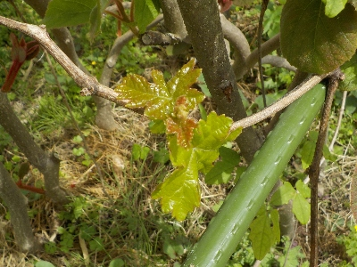
2012年に種蒔きしたマスカットです。枯れそうで枯れないでもう11年です。
もう実は期待していません。キウイとアケビの横で、枯れずにいてくれたらそれでいいです。
【マスカットTOP】
【果物TOP】
【園芸TOP】
2020/05/02
ブドウにガットサイドSを塗りました。
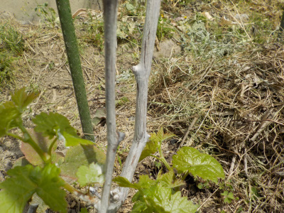
殺虫剤を塗っておくと蛾の被害が少ないそうです。
効果を期待しています。
【マスカットTOP】
【果物TOP】
【園芸TOP】
2020/02/18
マスカットが枯れました。
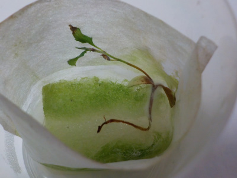
マスカットにカビが生えました。
枯れました。
1本だけだったので、とっても残念です。
ブドウは苗を買って育てた方がいいかなーなって少し思いましたが、苗を買って育てるんなら実を買って食べた方がいいかな。
また種を見つけたら育てようと思います。
【マスカットTOP】 【果物TOP】 【園芸TOP】
2020/02/11
マスカットに冬はキツイかな。
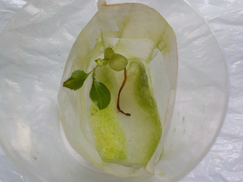
マスカットがちょっとしおれています。
近頃は成長している感じがありません。
屋内ですが、いつも暖かいわけではないのでしょうがないです。
今までもったので、春まで持ちこたえて欲しいです。
【マスカットTOP】 【果物TOP】 【園芸TOP】
2019/12/28
マスカットが少し大きくなりました。
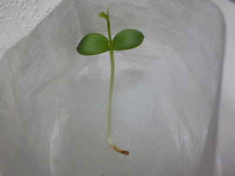
双葉の次が出てきました。
根っこがあまり伸びていないのが少し気になります。
【マスカットTOP】 【果物TOP】 【園芸TOP】
2019/12/14
マスカットが発芽しました。
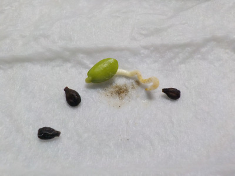
部屋の気温が暖かいせいか発芽しました。
外は寒いので、このまま部屋に置いた方がよさそうですね。
【マスカットTOP】 【果物TOP】 【園芸TOP】
2019/11/13
マスカットの種をウールマットに蒔きました。
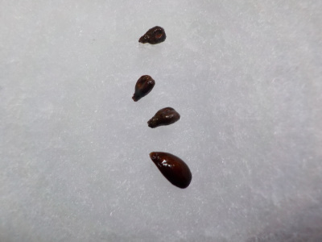
春に蒔こうと冷蔵庫に入れてたんですが、一部カビが生えたので蒔いてしまいました。
芽が出るかな？
【マスカットTOP】 【果物TOP】 【園芸TOP】
2019/08/04
ブドウに幼虫襲来。
大きい虫が葉っぱを食べていました。
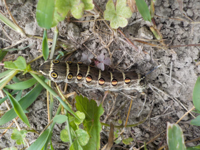
このサイズになるまで沢山葉っぱを食べたんだろうな。
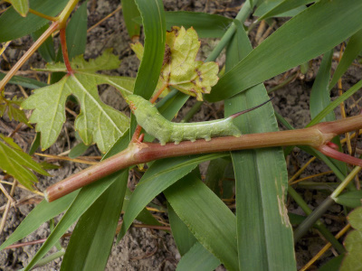
よく見たら、緑の小さいイモムシもいました。
こんなに虫が付くと思うと、ブドウを畑て大きくするのは無理かも。
ハウスとか鉢でバッチリ管理しないと駄目かな。
今年の冬に枯れたらプランターに植え替えるか、破棄しよう。
【マスカットTOP】 【果物TOP】 【園芸TOP】
2019/04/07
ぶどうが枯れた？
ブドウから新芽が出ていません。3本あって3ほんとも枯れたみたいになっています。
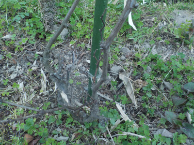
根本のほうには小さな芽っぽいのがあるんですが、今のところ成長してないです。
枝の上部は黒く乾燥しています。
冬の間に病気にでもなったのかな。
【マスカットTOP】 【果物TOP】 【園芸TOP】
2018/07/01
ブドウの葉っぱが食べられている。
何者かに葉っぱを食べられてしまいました。
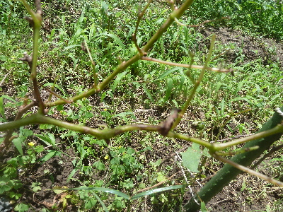
犯人は見つかりませんでした。
毎年食べられるのでなかなか成長しません。
【マスカットTOP】 【果物TOP】 【園芸TOP】
2016/04/16
春になったので、ブドウの葉っぱが復活しました。
鉢植えをやめて地植えにしました。
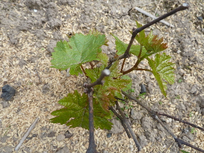
鉢は水やりが面倒です。
これで楽ちんかな？
たぶん成長も早いと思う。
【マスカットTOP】 【果物TOP】 【園芸TOP】
2015/05/10
マスカットは今こんな感じです。
あんまりかまっていないですが、枯れずに育っています。
なんか手間を掛けた方がいいかな。
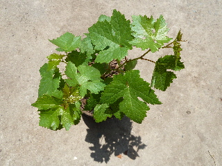
肥料とかあげようかな。
【マスカットTOP】 【果物TOP】 【園芸TOP】
2014/04/26
マスカットから葉っぱが出て復活です。
去年の秋に葉っぱが落ちて、枯れたようになっていたマスカットから葉っぱが出てきました。
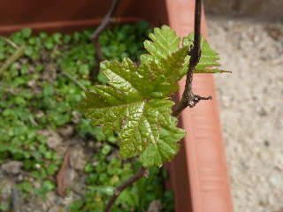
でも無事に復活したのは今のところ3本だけです。
全滅しないように、大事に育てたいです。
【マスカットTOP】 【果物TOP】 【園芸TOP】
2013/08/17
マスカットの成長はゆっくりです。
マスカットに限ったことではないですが、果樹って成長があんまり早くない気がします。
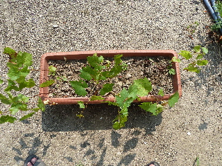
ひょろひょろとした木が只今7本育っています。
14本が半減してますね。
夏の暑さのせいか、葉っぱが青々してないです。
これってちゃんと育つのかなー？
【マスカットTOP】 【果物TOP】 【園芸TOP】
2013/05/25
マスカットをプランターに植え替えました。
マスカットをプランターに植え替えました。
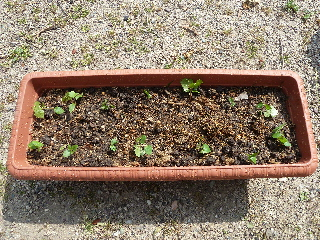
ちょっと大き目のプランターに14本も植えました。
多過ぎですね。
でもきっと何本かは枯れちゃうと思うので、植えちゃいました。
何本育つかな？
【マスカットTOP】 【果物TOP】 【園芸TOP】
2013/05/18
マスカットが続々発芽中。
温かくなったら続々発芽しました。
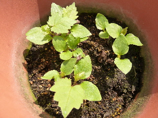
最初に芽が出たのは、もうギザギザの葡萄らしい葉っぱがでましたね。
このままだと窮屈なので、植え替えをしないといけませんね。
大きめのプランターに並べて植えようかな。
【マスカットTOP】 【果物TOP】 【園芸TOP】
2013/05/03
マスカットの芽が出ました。
春になっても芽が出ないので、今年も失敗したって思っていたんですが、今頃芽が出ました。
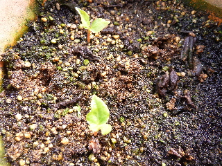
あきらめて鉢を整理しなくて良かったです。
気温がだいぶ上がらないと発芽しないものなんですね。種を沢山まいたはずなので、これからドンドン芽が出てくるのかな？
【マスカットTOP】 【果物TOP】 【園芸TOP】
2012/10/08
マスカットの種まき
正しい名前は分からないですが、
緑色で、ぶどうの皮を食べない品種で、種ありの葡萄の種です。
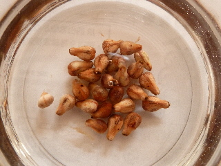
マスカットって事にします。
今日鉢に植えました。以前にも葡萄の種を蒔いたことがあるんですが、失敗したので多目にしました。
順調にいけば春に芽が出ると思います。
それまで土が乾燥しないように、管理に気を付けようと思います。
【マスカットTOP】
【果物TOP】
【園芸TOP】
畑仕事じゃないよ。
【おいしいものを食べよう。】【たくさん寝よう。】
【ソロ活をしよう!】【季節感のあることをしよう。】【動画視聴はほどほどに。】【当サイトの全てのコンテンツは無断転載禁止です。】